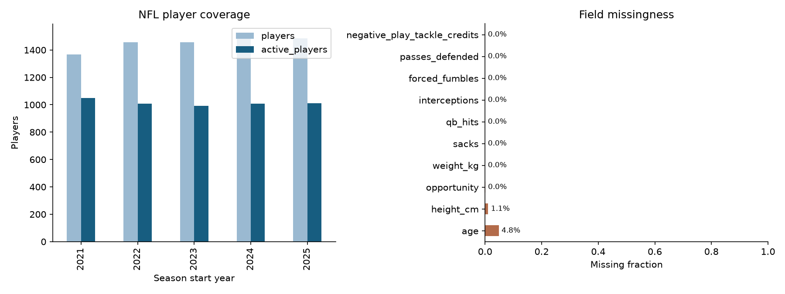
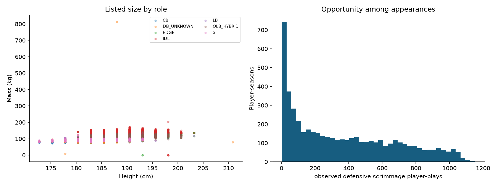
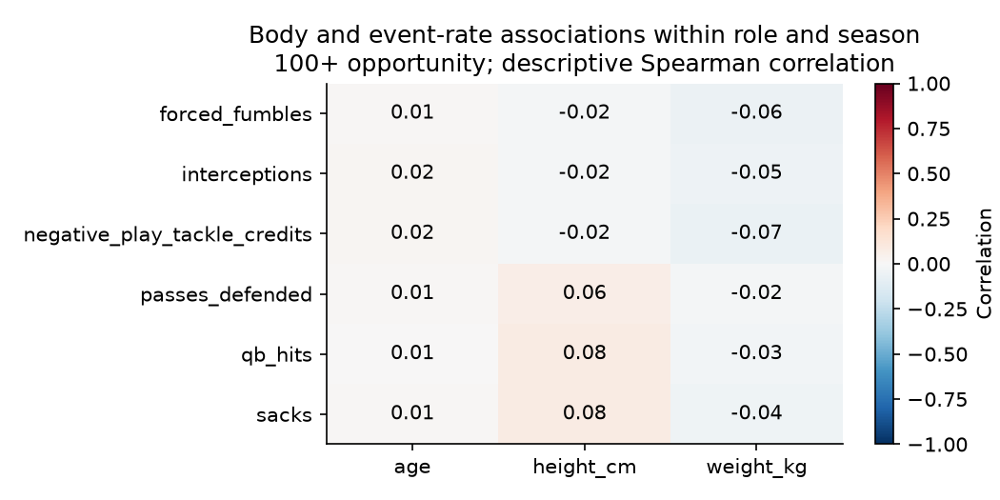

7,279 player-season rows · 2,754 athletes · [2021, 2022, 2023, 2024, 2025]
Role-specific event evidence, data coverage and uncertainty govern interpretation. Physical role similarity does not establish cross-sport success.



2024 selects the model; 2025 evaluates it. Forecasts exclude current physical listings. Baselines are retained when they perform better on validation.
| task | target | fold | model | selected_on_validation | n | brier | average_precision | mae | rmse | spearman | r2 |
|---|---|---|---|---|---|---|---|---|---|---|---|
| availability | any_opportunity | validation | prevalence | False | 1456 | 0.242 | 0.589 | NaN | NaN | NaN | NaN |
| availability | any_opportunity | validation | logistic | True | 1456 | 0.133 | 0.905 | NaN | NaN | NaN | NaN |
| availability | any_opportunity | test | prevalence | False | 1513 | 0.248 | 0.557 | NaN | NaN | NaN | NaN |
| availability | any_opportunity | test | logistic | True | 1513 | 0.134 | 0.902 | NaN | NaN | NaN | NaN |
| opportunity | opportunity | validation | persistence | True | 1456 | NaN | NaN | 139.139 | 235.067 | 0.748 | 0.414 |
| opportunity | opportunity | validation | hurdle_ridge | False | 1456 | NaN | NaN | 2336.878 | 83651.830 | 0.748 | -74206.495 |
| opportunity | opportunity | test | persistence | True | 1513 | NaN | NaN | 126.927 | 218.413 | 0.763 | 0.472 |
| opportunity | opportunity | test | hurdle_ridge | False | 1513 | NaN | NaN | 135.337 | 221.952 | 0.759 | 0.454 |
| effectiveness_rate | sacks | validation | role_mean | False | 857 | NaN | NaN | 0.313 | 0.537 | 0.481 | 0.158 |
| effectiveness_rate | sacks | validation | persistence | False | 857 | NaN | NaN | 0.300 | 0.620 | 0.521 | -0.121 |
| effectiveness_rate | sacks | validation | ridge | True | 857 | NaN | NaN | 0.257 | 0.509 | 0.608 | 0.243 |
| effectiveness_rate | sacks | test | role_mean | False | 843 | NaN | NaN | 0.302 | 0.474 | 0.514 | 0.239 |
| effectiveness_rate | sacks | test | persistence | False | 843 | NaN | NaN | 0.301 | 0.569 | 0.511 | -0.100 |
| effectiveness_rate | sacks | test | ridge | True | 843 | NaN | NaN | 0.263 | 0.451 | 0.594 | 0.310 |
| total_contribution_count | sacks | test | selected_rate_x_expected_opportunity | NaN | 1513 | NaN | NaN | 0.662 | 1.440 | 0.600 | 0.480 |
| total_contribution_count | sacks | test | prior_count | NaN | 1513 | NaN | NaN | 0.708 | 1.591 | 0.610 | 0.365 |
| effectiveness_rate | qb_hits | validation | role_mean | False | 857 | NaN | NaN | 0.631 | 1.111 | 0.568 | 0.220 |
| effectiveness_rate | qb_hits | validation | persistence | False | 857 | NaN | NaN | 0.586 | 1.159 | 0.610 | 0.152 |
| effectiveness_rate | qb_hits | validation | ridge | True | 857 | NaN | NaN | 0.516 | 1.048 | 0.689 | 0.306 |
| effectiveness_rate | qb_hits | test | role_mean | False | 843 | NaN | NaN | 0.590 | 0.923 | 0.600 | 0.329 |
| effectiveness_rate | qb_hits | test | persistence | False | 843 | NaN | NaN | 0.566 | 1.116 | 0.594 | 0.019 |
| effectiveness_rate | qb_hits | test | ridge | True | 843 | NaN | NaN | 0.511 | 0.903 | 0.670 | 0.357 |
| total_contribution_count | qb_hits | test | selected_rate_x_expected_opportunity | NaN | 1513 | NaN | NaN | 1.333 | 2.960 | 0.658 | 0.577 |
| total_contribution_count | qb_hits | test | prior_count | NaN | 1513 | NaN | NaN | 1.373 | 3.083 | 0.666 | 0.541 |
| effectiveness_rate | interceptions | validation | role_mean | False | 857 | NaN | NaN | 0.105 | 0.184 | 0.347 | 0.066 |
| effectiveness_rate | interceptions | validation | persistence | False | 857 | NaN | NaN | 0.113 | 0.278 | 0.290 | -1.129 |
| effectiveness_rate | interceptions | validation | ridge | True | 857 | NaN | NaN | 0.099 | 0.181 | 0.403 | 0.093 |
| effectiveness_rate | interceptions | test | role_mean | False | 843 | NaN | NaN | 0.106 | 0.246 | 0.340 | 0.017 |
| effectiveness_rate | interceptions | test | persistence | False | 843 | NaN | NaN | 0.109 | 0.288 | 0.275 | -0.345 |
| effectiveness_rate | interceptions | test | ridge | True | 843 | NaN | NaN | 0.100 | 0.245 | 0.424 | 0.030 |
| total_contribution_count | interceptions | test | selected_rate_x_expected_opportunity | NaN | 1513 | NaN | NaN | 0.256 | 0.605 | 0.465 | 0.275 |
| total_contribution_count | interceptions | test | prior_count | NaN | 1513 | NaN | NaN | 0.298 | 0.801 | 0.403 | -0.274 |
| effectiveness_rate | forced_fumbles | validation | role_mean | False | 857 | NaN | NaN | 0.130 | 0.263 | 0.162 | 0.021 |
| effectiveness_rate | forced_fumbles | validation | persistence | False | 857 | NaN | NaN | 0.147 | 0.391 | 0.179 | -1.160 |
| effectiveness_rate | forced_fumbles | validation | ridge | True | 857 | NaN | NaN | 0.121 | 0.263 | 0.288 | 0.019 |
| effectiveness_rate | forced_fumbles | test | role_mean | False | 843 | NaN | NaN | 0.136 | 0.311 | 0.113 | -0.005 |
| effectiveness_rate | forced_fumbles | test | persistence | False | 843 | NaN | NaN | 0.138 | 0.414 | 0.188 | -0.772 |
| effectiveness_rate | forced_fumbles | test | ridge | True | 843 | NaN | NaN | 0.126 | 0.309 | 0.253 | 0.013 |
| total_contribution_count | forced_fumbles | test | selected_rate_x_expected_opportunity | NaN | 1513 | NaN | NaN | 0.265 | 0.512 | 0.406 | 0.188 |
| total_contribution_count | forced_fumbles | test | prior_count | NaN | 1513 | NaN | NaN | 0.298 | 0.682 | 0.301 | -0.439 |
| effectiveness_rate | passes_defended | validation | role_mean | False | 857 | NaN | NaN | 0.437 | 0.796 | 0.426 | 0.136 |
| effectiveness_rate | passes_defended | validation | persistence | False | 857 | NaN | NaN | 0.514 | 1.011 | 0.376 | -0.391 |
| effectiveness_rate | passes_defended | validation | ridge | True | 857 | NaN | NaN | 0.420 | 0.796 | 0.493 | 0.136 |
| effectiveness_rate | passes_defended | test | role_mean | False | 843 | NaN | NaN | 0.475 | 0.846 | 0.402 | 0.114 |
| effectiveness_rate | passes_defended | test | persistence | False | 843 | NaN | NaN | 0.582 | 1.419 | 0.381 | -1.491 |
| effectiveness_rate | passes_defended | test | ridge | True | 843 | NaN | NaN | 0.463 | 0.854 | 0.457 | 0.097 |
| total_contribution_count | passes_defended | test | selected_rate_x_expected_opportunity | NaN | 1513 | NaN | NaN | 1.054 | 2.075 | 0.649 | 0.481 |
| total_contribution_count | passes_defended | test | prior_count | NaN | 1513 | NaN | NaN | 1.130 | 2.272 | 0.619 | 0.378 |
| effectiveness_rate | negative_play_tackle_credits | validation | role_mean | False | 857 | NaN | NaN | 0.534 | 0.943 | 0.413 | 0.115 |
| effectiveness_rate | negative_play_tackle_credits | validation | persistence | False | 857 | NaN | NaN | 0.561 | 1.105 | 0.444 | -0.216 |
| effectiveness_rate | negative_play_tackle_credits | validation | ridge | True | 857 | NaN | NaN | 0.489 | 0.941 | 0.521 | 0.117 |
| effectiveness_rate | negative_play_tackle_credits | test | role_mean | False | 843 | NaN | NaN | 0.526 | 0.891 | 0.387 | 0.100 |
| effectiveness_rate | negative_play_tackle_credits | test | persistence | False | 843 | NaN | NaN | 0.603 | 1.156 | 0.389 | -0.514 |
| effectiveness_rate | negative_play_tackle_credits | test | ridge | True | 843 | NaN | NaN | 0.498 | 0.888 | 0.487 | 0.107 |
| total_contribution_count | negative_play_tackle_credits | test | selected_rate_x_expected_opportunity | NaN | 1513 | NaN | NaN | 1.164 | 2.240 | 0.673 | 0.465 |
| total_contribution_count | negative_play_tackle_credits | test | prior_count | NaN | 1513 | NaN | NaN | 1.314 | 2.484 | 0.642 | 0.342 |